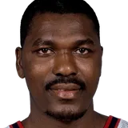

His teams reached the NBA Finals once (1985-86) without winning the title. In his 491 games for 3 teams over 8 seasons they went 257–234 (52.3%), +23 games over .500, with an average final finish of 10.4. The biggest one-season rise in his career: the Golden State Warriors went from #19 in 1989-90 to #7 in 1990-91.
Jump to: Record by opponent · Season by season · Teammate help
Compare Jim Petersen with…
Suggested, same era and similar teammate help:
Final NBA finish, season by season
Title Finals Other playoffs Missed playoffs. #1 = champion; the dashed line is last place that season. Each point opens that season's final standings.
All 23 teams ranked in 1985-86, his best finish (#2)Teammate help

Hakeem Olajuwon17.84 seasons Chris Mullin12.03 seasons
Chris Mullin12.03 seasons- Ralph Sampson6.53 seasons
Seasons with help 4.7 to 7.8 (5): best finish #2 of 23, 1985-86, worst #10 of 23, 1987-88.
Career
Career records (W–L, W − L, with and without) include 2026-27 games through Nov. 22, 2026; season counts and finishes are through 2025-26. Each card opens its board in the same scope. How we count.

Latest completed seasons
- 1991-92·
 Golden State·#9 of 2755–27 · Lost in the first round 1–3 to
Golden State·#9 of 2755–27 · Lost in the first round 1–3 to  Seattle
Seattle - 1990-91·Golden State·#7 of 2744–38 · Lost in the conference semifinals 1–4 to
 LA Lakers
LA Lakers - 1989-90·Golden State·#19 of 2737–45 · Missed playoffs
Season by season
Newest first; every header sorts. Final NBA finish is the team's rank among all teams that season (#1 = champion) and opens that season's standings. "Without him" uses the team-season window; the span line counts only the games between his first and last game for the team.
| 1991-92 | #9 of 27 | 55–27 67.1% | Lost 1st round 1–3 | 27 of 82 | 15–12 55.6% | 40–15 72.7%span: 20–6, gap −21.4 | −17.2 | |
| 1990-91 | #7 of 27 | 44–38 53.7% | Lost conf semis 1–4 | 62 of 82 | 32–30 51.6% | 12–8 60.0%span: 9–6, gap −8.4 | −8.4 | |
| 1989-90 | #19 of 27 | 37–45 45.1% | Missed playoffs | 43 of 82 | 20–23 46.5% | 17–22 43.6%span: 12–8, gap −13.5 | +2.9 | |
| 1988-89 | #20 of 25 | 27–55 32.9% | Missed playoffs | 66 of 82 | 23–43 34.8% | 4–12 25.0%span: 3–5, gap −2.7 | +9.8 | |
| 1987-88 | #10 of 23 | 46–36 56.1% | Lost 1st round 1–3 | 69 of 82 | 39–30 56.5% | 7–6 53.8%span: N/A, gap N/A | +2.7 | |
| 1986-87 | #7 of 23 | 42–40 51.2% | Lost conf semis 2–4 | 82 of 82 | 42–40 51.2% | N/A | N/A | |
| 1985-86 | #2 of 23 | 51–31 62.2% | Lost Finals 2–4 | 82 of 82 | 51–31 62.2% | N/A | N/A | |
| 1984-85 | #9 of 23 | 48–34 58.5% | Lost 1st round 2–3 | 60 of 82 | 35–25 58.3% | 13–9 59.1%span: 13–9, gap −0.8 | −0.8 |
Teammate help by season
Two separate numbers per season, each with every teammate that adds to it. Help this season = Teammates Score points for honors won that season by teammates who shared a game with him. Help coming in = the same teammates' honors from the season before. How help works.
- 1991-92Golden State
Chris Mullin All-NBA 1stAll-Star527 gTim Hardaway All-NBA 2ndAll-Star427 gBilly Owens All-Rookie 1st0.2527 g
Help this season: 9.25 = 5 Chris Mullin + 4 Tim Hardaway + 0.25 Billy Owens
More: help coming in and other teammates
Help coming in (teammates' honors the season before): 5 = 4 Chris Mullin + 1 Tim Hardaway
Other teammates (no honors that season): Mario Elie 27 g, Vincent Askew 27 g, Tyrone Hill 27 g, Victor Alexander 25 g, Sarunas Marciulionis 24 g, Chris Gatling 17 g, Tom Tolbert 11 g, Rod Higgins 3 g, Tony Massenburg 3 g, Kenny Battle 3 g, Jaren Jackson 3 g, Jud Buechler 2 g, Mike Smrek 2 g, Alton Lister 1 g and 1 more
- 1990-91Golden State
Chris Mullin All-NBA 2ndAll-Star462 gTim Hardaway All-Star162 g
Help this season: 5 = 4 Chris Mullin + 1 Tim Hardaway
More: help coming in and other teammates
Help coming in (teammates' honors the season before): 3.25 = 3 Chris Mullin + 0.25 Tim Hardaway
Other teammates (no honors that season): Rod Higgins 62 g, Mitch Richmond 58 g, Alton Lister 57 g, Tyrone Hill 54 g, Kevin Pritchard 43 g, Tom Tolbert 42 g, Sarunas Marciulionis 37 g, Paul Mokeski 32 g, Mario Elie 30 g, Larry Robinson 19 g, Les Jepsen 17 g, Steve Johnson 13 g, Vincent Askew 7 g, Bart Kofoed 4 g and 1 more
- 1989-90Golden State
Chris Mullin All-NBA 3rdAll-Star339 gTim Hardaway All-Rookie 1st0.2543 g
Help this season: 3.25 = 3 Chris Mullin + 0.25 Tim Hardaway
More: help coming in and other teammates
Help coming in (teammates' honors the season before): 4.75 = 4 Chris Mullin + 0.75 Mitch Richmond
Other teammates (no honors that season): Terry Teagle 43 g, Rod Higgins 43 g, Mitch Richmond 42 g, Manute Bol 40 g, Tom Tolbert 39 g, Sarunas Marciulionis 39 g, Kelvin Upshaw 22 g, Winston Garland 14 g, Chris Welp 13 g, Mike Smrek 12 g, Uwe Blab 7 g, John Shasky 6 g
- 1988-89
 SacramentoHelp this season: 0, no honored teammate
SacramentoHelp this season: 0, no honored teammateMore: help coming in
Help coming in (teammates' honors the season before): 2.25 = 1 Rodney McCray + 1 Danny Ainge + 0.25 Kenny Smith
- 1987-88
 Houston
Hakeem Olajuwon All-NBA 1stAll-StarAll-Def 1st666 gRodney McCray All-Def 1st168 g
Houston
Hakeem Olajuwon All-NBA 1stAll-StarAll-Def 1st666 gRodney McCray All-Def 1st168 g
Help this season: 7 = 6 Hakeem Olajuwon + 1 Rodney McCray
More: help coming in and other teammates
Help coming in (teammates' honors the season before): 9.5 = 6 Hakeem Olajuwon + 1 Joe Barry Carroll + 1 Sleepy Floyd + 1 Ralph Sampson + 0.5 Rodney McCray
Other teammates (no honors that season): Purvis Short 68 g, Allen Leavell 67 g, Joe Barry Carroll 63 g, Robert Reid 62 g, Buck Johnson 62 g, Sleepy Floyd 59 g, Cedric Maxwell 58 g, World B. Free 45 g, Lester Conner 40 g, Ralph Sampson 6 g, Steve Harris 3 g, Richard Anderson 2 g
- 1986-87Houston
Hakeem Olajuwon All-NBA 1stAll-StarAll-Def 1st675 gRalph Sampson All-Star143 gRodney McCray All-Def 2nd0.581 g
Help this season: 7.5 = 6 Hakeem Olajuwon + 1 Ralph Sampson + 0.5 Rodney McCray
More: help coming in and other teammates
Help coming in (teammates' honors the season before): 5 = 4 Hakeem Olajuwon + 1 Ralph Sampson
Other teammates (no honors that season): Robert Reid 75 g, Steve Harris 74 g, Dirk Minniefield 63 g, Dave Feitl 62 g, Buck Johnson 60 g, Allen Leavell 53 g, Richard Anderson 50 g, Cedric Maxwell 46 g, Mitchell Wiggins 32 g, Lewis Lloyd 32 g, Conner Henry 18 g
- 1985-86Houston
Hakeem Olajuwon All-NBA 2ndAll-Star468 gRalph Sampson All-Star179 g
Help this season: 5 = 4 Hakeem Olajuwon + 1 Ralph Sampson
More: help coming in and other teammates
Help coming in (teammates' honors the season before): 6.25 = 4.5 Ralph Sampson + 1.75 Hakeem Olajuwon
Other teammates (no honors that season): Lewis Lloyd 82 g, Rodney McCray 82 g, Robert Reid 80 g, Mitchell Wiggins 78 g, Allen Leavell 74 g, John Lucas 65 g, Steve Harris 57 g, Granville Waiters 43 g, Craig Ehlo 36 g, Hank McDowell 22 g
- 1984-85Houston
Ralph Sampson All-NBA 2ndAll-StarAll-Star MVP4.560 gHakeem Olajuwon All-StarAll-Def 2ndAll-Rookie 1st1.7560 g
Help this season: 6.25 = 4.5 Ralph Sampson + 1.75 Hakeem Olajuwon
More: help coming in and other teammates
Help coming in (teammates' honors the season before): 1.75 = 1.75 Ralph Sampson
Other teammates (no honors that season): Mitchell Wiggins 60 g, Robert Reid 60 g, Lewis Lloyd 60 g, Rodney McCray 60 g, Lionel Hollins 58 g, Hank McDowell 34 g, Craig Ehlo 33 g, John Lucas 28 g, Allen Leavell 28 g, Phil Ford 25 g, Larry Micheaux 20 g
Record against each opponent
- Best regular-season record against one franchise: 14–6 (70.0%) against the Golden State Warriors in 20 games.
- Toughest regular-season record against one franchise: 6–25 (19.4%) against the Los Angeles Lakers in 31 games.
- Most playoff series against one franchise: 2 against the Los Angeles Lakers, 1–1 in series and 5–5 in games.
Regular season, through 2025-26 (2026-27 games not included): 491 games, 257–234, against 27 franchises.
Grouped by franchise (named as today); game lists keep each team's name that season. Filters and the tab are kept in the URL, so a filtered view can be shared.
| Games list | |||||||
|---|---|---|---|---|---|---|---|
| 33 | 17–16 | 51.5% | +1 | 1–0 (4–2 in games) | 1984-85 to 1991-92 | ||
| 32 | 18–14 | 56.2% | +4 | 0–1 (1–3 in games) | 1984-85 to 1991-92 | ||
| 32 | 18–14 | 56.2% | +4 | 1–0 (3–1 in games) | 1984-85 to 1991-92 | ||
| 32 | 18–14 | 56.2% | +4 | 1–0 (3–1 in games) | 1984-85 to 1991-92 | ||
| 31 | 6–25 | 19.4% | −19 | 1–1 (5–5 in games) | 1984-85 to 1991-92 | ||
| 31 | 12–19 | 38.7% | −7 | 0–1 (2–4 in games) | 1984-85 to 1991-92 | ||
| 31 | 13–18 | 41.9% | −5 | 0–1 (2–1 in games) | 1984-85 to 1991-92 | ||
| 30 | 19–11 | 63.3% | +8 | N/A | 1984-85 to 1991-92 | ||
| 29 | 14–15 | 48.3% | −1 | N/A | 1984-85 to 1990-91 | ||
| 28 | 19–9 | 67.9% | +10 | 1–0 (3–0 in games) | 1984-85 to 1990-91 | ||
| 20 | 14–6 | 70.0% | +8 | N/A | 1984-85 to 1988-89 | ||
| 14 | 3–11 | 21.4% | −8 | 0–1 (2–4 in games) | 1984-85 to 1991-92 | ||
| 13 | 10–3 | 76.9% | +7 | N/A | 1984-85 to 1991-92 | ||
| 13 | 5–8 | 38.5% | −3 | N/A | 1984-85 to 1990-91 | ||
| 12 | 6–6 | 50.0% | 0 | N/A | 1984-85 to 1991-92 | ||
| 12 | 8–4 | 66.7% | +4 | N/A | 1984-85 to 1990-91 | ||
| 11 | 6–5 | 54.5% | +1 | N/A | 1988-89 to 1991-92 | ||
| 11 | 8–3 | 72.7% | +5 | N/A | 1984-85 to 1991-92 | ||
| 11 | 3–8 | 27.3% | −5 | N/A | 1984-85 to 1990-91 | ||
| 11 | 6–5 | 54.5% | +1 | N/A | 1985-86 to 1990-91 | ||
| 10 | 7–3 | 70.0% | +4 | N/A | 1984-85 to 1990-91 | ||
| 9 | 4–5 | 44.4% | −1 | N/A | 1984-85 to 1990-91 | ||
| 8 | 4–4 | 50.0% | 0 | N/A | 1988-89 to 1991-92 | ||
| 8 | 4–4 | 50.0% | 0 | N/A | 1984-85 to 1990-91 | ||
| 8 | 7–1 | 87.5% | +6 | N/A | 1988-89 to 1991-92 | ||
| 6 | 5–1 | 83.3% | +4 | N/A | 1989-90 to 1991-92 | ||
| 5 | 3–2 | 60.0% | +1 | N/A | 1989-90 to 1990-91 |
Rows add up to his career record in his games. A playoff series counts when he played in it; early round-robin games show as games only. How we count.
Playoffs, with and without him
| 1990-91 | Lost in the conference semifinals 1–4 to | #7 of 27 | 9 of 9 | 4–5 44.4% | N/A | N/A | |
| 1987-88 | Lost in the first round 1–3 to | #10 of 23 | 4 of 4 | 1–3 25.0% | N/A | N/A | |
| 1986-87 | Lost in the conference semifinals 2–4 to | #7 of 23 | 10 of 10 | 5–5 50.0% | N/A | N/A | |
| 1985-86 | Lost in the NBA Finals 2–4 to | #2 of 23 | 20 of 20 | 13–7 65.0% | N/A | N/A | |
| 1984-85 | Lost in the first round 2–3 to | #9 of 23 | 3 of 5 | 2–1 66.7% | 0–2 0.0% | +66.7 |
Arrival and departure
Team wins per 82 games the season before he arrived vs his first season there, and his last season vs the season after he left. He leaves a team only when his next season with games is for another team (or he never plays again); whole seasons he missed and came back from are one "Missed" row with the team's record without him. Per 82 so short seasons compare fairly. These are team records, not a measure of what he did.
| Left | after 1991-92 | 1991-92: 55–27 55.0 per 82 | 1992-93: 34–48 34.0 per 82 without him | −21.0 wins | |
| Arrived | 1989-90 | 1988-89: 43–39 43.0 per 82 | 1989-90: 37–45 37.0 per 82 | −6.0 wins | |
| Left | after 1988-89 | 1988-89: 27–55 27.0 per 82 | 1989-90: 23–59 23.0 per 82 without him | −4.0 wins | |
| Arrived | 1988-89 | 1987-88: 24–58 24.0 per 82 | 1988-89: 27–55 27.0 per 82 | +3.0 wins | |
| Left | after 1987-88 | 1987-88: 46–36 46.0 per 82 | 1988-89: 45–37 45.0 per 82 without him | −1.0 wins | |
| Debut | 1984-85 | 1983-84: 29–53 29.0 per 82 | 1984-85: 48–34 48.0 per 82 | +19.0 wins |
Best duos
Team record in regular-season games both played, top 10 by win %, at least 50 games together.
- John Lucas 58–35 62.4%
- Mitchell Wiggins 100–70 58.8%
- Lionel Hollins 34–24 58.6%
- Allen Leavell 130–92 58.6%
- Hakeem Olajuwon 157–112 58.4%
- Robert Reid 161–116 58.1%
- Lewis Lloyd 101–73 58.0%
- Ralph Sampson 109–79 58.0%
- Hank McDowell 32–24 57.1%
- Cedric Maxwell 59–45 56.7%
With and without his teammates
His 12 teammates with the most regular-season games together. "Together" is the team's record in the games both played for it; "Without him" is the team's record in the games Jim Petersen played for that team while the teammate was on it (between the teammate's first and last game for the team, the appearance span) and the teammate did not play. Fewer than 20 games without him: no gap. Games through Nov. 22, 2026. How we count.
- Rodney McCrayHouston 1984-85 to 1987-88; Sacramento 1988-89
- Together
- 184–159 53.6%
- Without him
- 3–7 30.0%
- Gap
- Too few games without him
- Robert ReidHouston 1984-85 to 1987-88
- Together
- 161–116 58.1%
- Without him
- 5–9 35.7%
- Gap
- Too few games without him
- Hakeem OlajuwonHouston 1984-85 to 1987-88
- Together
- 157–112 58.4%
- Without him
- 10–14 41.7%
- Gap
- 16.7 points lower
- Allen LeavellHouston 1984-85 to 1987-88
- Together
- 130–92 58.6%
- Without him
- 21–22 48.8%
- Gap
- 9.7 points lower
- Ralph SampsonHouston 1984-85 to 1987-88
- Together
- 109–79 58.0%
- Without him
- 19–17 52.8%
- Gap
- 5.2 points lower
- Lewis LloydHouston 1984-85 to 1986-87
- Together
- 101–73 58.0%
- Without him
- 0–1 0.0%
- Gap
- Too few games without him
- Mitchell WigginsHouston 1984-85 to 1986-87
- Together
- 100–70 58.8%
- Without him
- 1–4 20.0%
- Gap
- Too few games without him
- Steve HarrisHouston 1985-86 to 1987-88
- Together
- 72–62 53.7%
- Without him
- 25–11 69.4%
- Gap
- 15.7 points higher
- Tim HardawayGolden State 1989-90 to 1991-92
- Together
- 67–65 50.8%
- Without him
- N/A N/A
- Gap
- Too few games without him
- Chris MullinGolden State 1989-90 to 1991-92
- Together
- 65–63 50.8%
- Without him
- 2–2 50.0%
- Gap
- Too few games without him
- Buck JohnsonHouston 1986-87 to 1987-88
- Together
- 64–58 52.5%
- Without him
- 17–12 58.6%
- Gap
- 6.2 points higher
- Rod HigginsGolden State 1989-90 to 1991-92
- Together
- 52–56 48.1%
- Without him
- 15–9 62.5%
- Gap
- 14.4 points higher